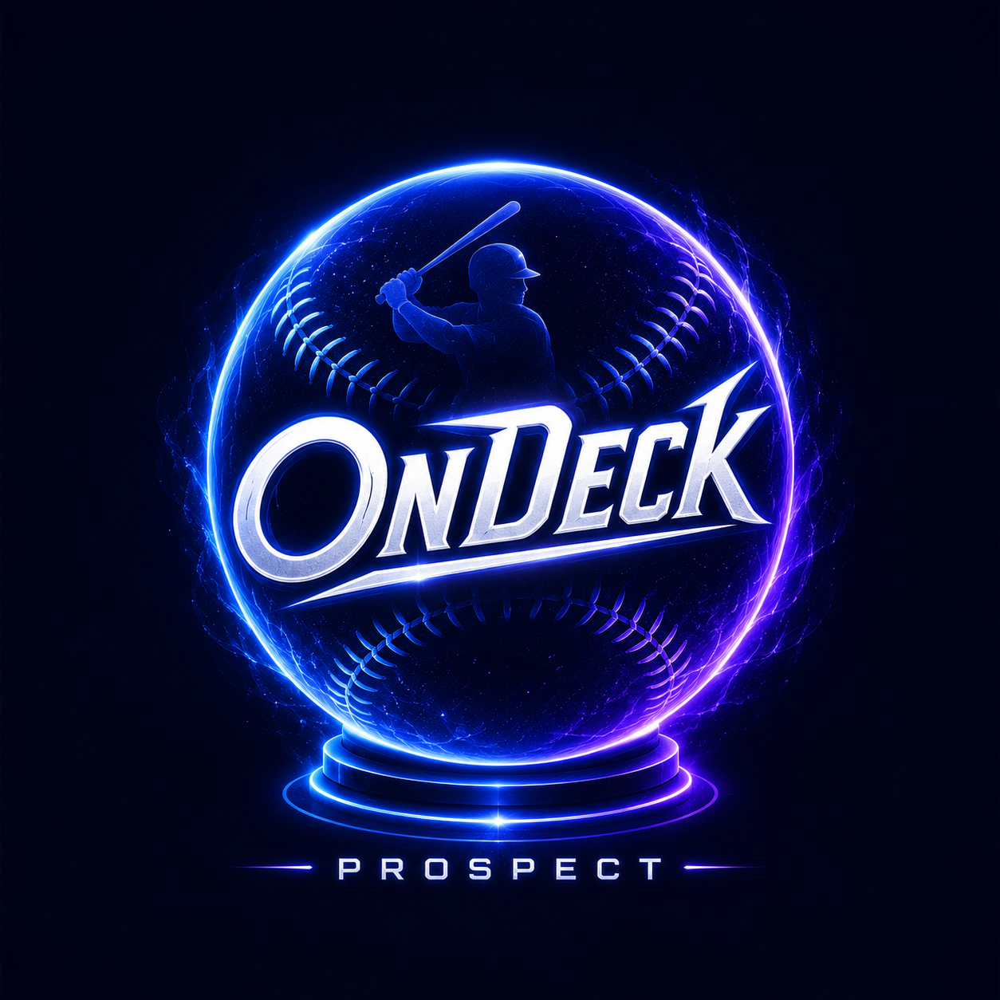

Graduated
MLB graduates stay in the system.
Players move here automatically once our data shows MLB status and removal from the current Top 100, while profile, thesis, card market, and timeline history remain intact.

Graduated
Players move here automatically once our data shows MLB status and removal from the current Top 100, while profile, thesis, card market, and timeline history remain intact.